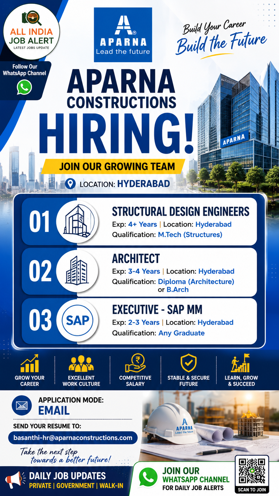

Aparna Constructions has officially announced its latest Recruitment Drive 2026 for experienced professionals in Structural Design, Architecture and SAP MM departments. The company is looking for talented candidates who are passionate about engineering, construction and real estate development. Candidates meeting the required qualifications and experience are invited to apply through email.
Aparna Constructions is one of India's leading real estate and infrastructure companies, well known for delivering premium residential, commercial and integrated township projects. Working with Aparna provides professionals an opportunity to participate in landmark developments while building a stable and rewarding career.
| S.No | Position | Experience | Qualification |
|---|---|---|---|
| 1 | Structural Design Engineer | 4+ Years | M.Tech (Structures) |
| 2 | Architect | 3–4 Years | Diploma (Architecture) / B.Arch |
| 3 | Executive – SAP MM | 2–3 Years | Any Graduate |
Aparna Constructions is one of the most trusted and fastest-growing real estate developers in India. Headquartered in Hyderabad, the company has successfully completed numerous premium residential apartments, villas, commercial buildings and integrated township projects. With a strong focus on innovation, quality construction and customer satisfaction, Aparna has earned an excellent reputation in the real estate industry.
The company is known for using modern construction technology, maintaining high quality standards and delivering projects on time. Aparna offers employees a professional work culture, attractive salary packages, career growth opportunities and exposure to large-scale construction projects. Engineers, architects and management professionals working at Aparna gain valuable experience by handling technically challenging projects.
The Structural Design Engineer will be responsible for preparing structural designs, checking drawings, ensuring structural safety and coordinating with project execution teams. The Architect will prepare architectural drawings, coordinate with consultants, ensure design quality and support project planning activities. The Executive – SAP MM will handle procurement modules, inventory management, vendor coordination and SAP MM transactions while ensuring smooth material management for ongoing projects.
Selected candidates will also coordinate with project managers, consultants, contractors and internal departments to ensure timely completion of projects. They must maintain company quality standards, safety regulations and project documentation throughout the project lifecycle.
Aparna Constructions offers competitive salary packages based on qualification, experience and interview performance. Employees receive opportunities for career growth, professional development, performance-based increments, exposure to premium construction projects, insurance benefits, paid leave and a professional work environment with experienced industry experts.
Interested and eligible candidates can apply by sending their updated Resume/CV to the official recruitment email mentioned below. Ensure your resume includes your latest qualification, work experience, current CTC, expected CTC, notice period and contact details. Mention the position name in the email subject line for faster processing.
Application Mode: Email
Official Email:
basanthi-hr@aparnaconstructions.com
Only shortlisted candidates will be contacted by the HR team. Ensure all details mentioned in your resume are accurate. Candidates having relevant construction and real estate experience will be preferred.
1. Which company is hiring?
Aparna Constructions.
2. Where is the job location?
Hyderabad.
3. What is the application mode?
Email.
4. What is the official email?
basanthi-hr@aparnaconstructions.com
5. Is this a full-time job?
Yes.
6. Which positions are available?
Structural Design Engineer, Architect and Executive – SAP MM.
7. What qualifications are required?
M.Tech (Structures), Diploma/B.Arch or Any Graduate depending on the post.
8. Is experience required?
Yes, relevant experience is required for all listed positions.
9. What documents should I send?
Updated Resume, Educational Certificates, Experience Certificates and ID Proof.
10. Does Aparna offer career growth?
Yes, Aparna provides long-term career opportunities, professional development and exposure to premium projects.
Join our WhatsApp Channel to receive daily Private Jobs, Government Jobs, Walk-in Interviews and Engineering Recruitment Updates.
Join WhatsApp Channel